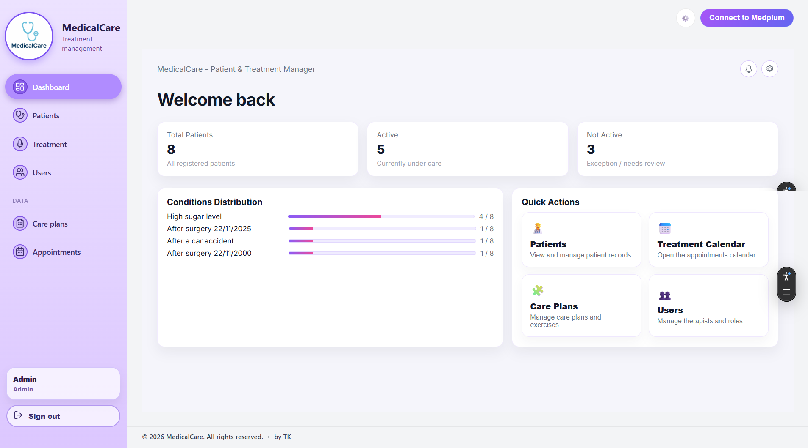

Beta PilotMedicalCare - AI-assisted HealthTech platform
HealthTech beta tested with therapists · Public demo uses sample data
MedicalCare is a HealthTech beta shared with physiotherapists and hydrotherapists for workflow feedback. The public demo illustrates therapist workflows using fictional patient records.
The product supports organized records, workflow management, scheduling, privacy-aware AI summaries, Hebrew/English support, RTL layout, and video-based progress tracking.
- Delivered to real pilot users for workflow feedback
- Workflow management
- AI-assisted summaries
- Scheduling and history
- Video-based progress tracking